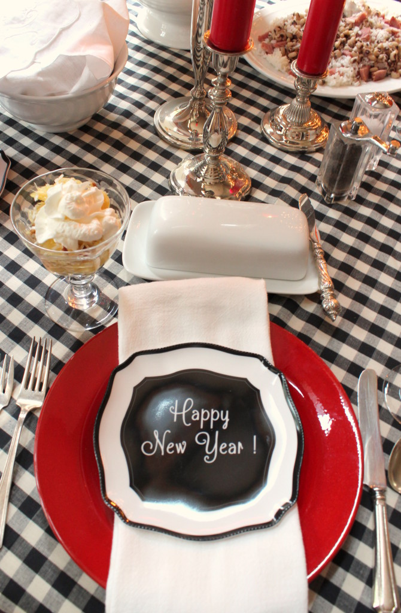

.png)
.PNG)
.PNG)
.PNG)
.PNG)
.PNG)
.JPG)
.JPG)
.PNG)
.PNG)


Happy New Year to you! ¬†I hope your day and year are off to a great start. üôÇ Both of our sons flew to Seattle on Wednesday, and we took our daughter to an out of town wedding yesterday. ¬†She will be staying in Atlanta over the weekend, so our New Year’s Eve was a quiet one with just me and my husband here.
I woke up sick this morning with a sore throat, lots of sneezing, and a low grade fever….and our washing machine decided to overflow. üôÅ ¬†I hope this is not a sign of how our new year is going to be! ¬†Regardless, we still enjoyed a traditional New Year’s Day lunch…hopefully full of vitamins that will help me get well quickly.¬†
.jpg)
Our menu was: Ambrosia, (with vitamin C – yay!)¬†Hoppin John, (a traditional Southern dish for New Year’s Day) turnip greens, (collards are more traditional, but I like turnips better) and cornbread (for my husband to soak up all the pot likker from the greens.)
I picked up the small Happy New Year plates at Homegoods back in November. ¬†They finished off this holiday season’s black and red color scheme perfectly. We ate in the family room so that we could watch football during the meal. ¬†Isn’t that what you are supposed to do on New Year’s Day?…and yes, the Christmas tree is still up.

To wrap up 2015, I thought it would be good to look at a review of the posts from the year…just in case you missed any. üôÇ ¬†I know I am supposed to run the data and write about what were your favorite posts from the year, but I am not feeling well today. Sooo…let’s just do a quick run-through of some of the posts, and then I will share with you my personal favorite from each month. ¬†(Yes, I am taking advantage of being sick!)
Among the posts in January we looked at the Vera Bradley Inn in Seaside, Florida and some rooms by the talented Cathy Kincaid, and we had a sneak peek at my workroom progress.  We had our photoshoot with Better Homes and Gardens that month, so my favorite post for January was the Behind the Scenes of the photoshoot one.
February brought a lot of Valentine related posts…like this house by Patrick Ahearn, and our home decorated with red for the holiday here, here, and here!¬† We also had our fill of eye candy from some rooms done by John B. Murray. ¬†A BIG birthday for my husband was celebrated that month, so my favorite February post was the Weekend Birthday Party celebration¬†complete with a sports theme.
Our daughter was working in Disney World during the first semester of 2015, and in March our family all met up there for a fun visit. ¬†Needless to say, Disney was the topic of several posts that month…like The Yacht and Beach Club,¬†¬†Wilderness Lodge and Animal Kingdom, Epcot, and the Magic Kingdom. ¬†The house was¬†decorated with green for St. Patrick’s Day. ¬†There were several other posts that month, but my favorite was the one in which we finally finished the workroom, and I could show it to you.
We decorated with red and yellow for Easter in April here and here, and we traveled back to Florida to visit our daughter.  On that trip we stayed in Celebration, and we looked at the hotel, the town, and the houses there in three different posts. My father and sister both have April birthdays, so my favorite post for that month was about a double birthday party we hosted for them. (A Disney celebration of course!)
¬†The month of May began with a beach house in Seaside, Florida. Both of our sons came home to visit that month, and we celebrated their visit with “welcome home” parties here and here. ¬†Mother’s Day brought lemon inspiration, a lemon cake, (that didn’t look very good üôÅ ) and a garden tour. ¬†We hosted a graduation party for our daughter’s boyfriend as he graduated from college, and we had more eye candy when we took a tour of a beautiful inn located in Rhode Island. ¬†May ended with a post on my retirement from teaching – my favorite of the month. üôÇ
With summer in full swing in June, we studied some rooms and a Nantucket Inn decorated by Trudy Dujardin.  I jumped on the summer bandwagon with a summer home tour broken into part 1, part 2, and part 3.  We found some inspiration for our 4th of July with a post on tables for that holiday, but my favorite of the month was the post on having Holly Mathis and her friend, Cindy over for lunch one afternoon.
(In case you haven’t heard, they have opened a wonderful shop in Chappell Hill, Texas called True Blue Home. ¬†The photos of everything are enough to make me want to chunk all my red and go with blue blue blue!)
A little more inspiration for the 4th started our month of July. Then we dealt with the summer heat by enjoying some pretty¬†pools and outdoor showers¬†and an armchair vacation to Martha’s Vineyard in 3 posts here, here, and here. ¬†We took a real vacation to St. Simons Island, and I shared that with you in part 1 and part 2. ¬†While we were there, we also ventured over to the nearby Jekyll Island, and I wrote about it here. ¬†My favorite July post was this Talk of the Weekend one because I just loved the houses in it!
To celebrate my birthday near the beginning of August, I did a post on one of my favorites: gingham! That month I also shared with you our local New Perry Hotel, a Disney birthday party for our daughter, farm to table decorating and dinner, (complete with a delicious dessert!) and our road trip to New England began with two posts on Charlottesville’s Oakhurst Inn. ¬†My favorite from the month though, was a post on decorating our daughter’s apartment (quite a departure from my typical style here.)
In September I shared Jan Karon’s new book with you, and the BHG Christmas Ideas magazine ¬†with our feature¬†came out (much earlier than I was expecting! üôÇ ) I wrote 8 posts about our road trip beginning with The Study at Yale (the hotel at which we stayed) followed by Perkins Cove, Maine, L.L. Bean and Freeport, Maine, Whitehall (the inn we stayed at in Maine), ¬†Bar Harbor and Camden, Maine, Edson Hill (the inn where we stayed in Vermont), Stowe, Vermont, the campus at Yale, and I ended September with my favorite of the road trip posts that month – decorating our son’s apartment¬†(because it took the entire road trip to furnish it! üôÇ )
The road trip posts came to a conclusion in October with 3 posts on the Southern Living Idea House in Charlottesville, Virginia and Pippin Hill – a wonderful vineyard there. ¬†Then began all things fall starting with a love letter to the season as I decorated the foyer and family room. ¬†That was followed by decorating in the kitchen and dining room,¬†decorating the workroom and playroom, (with some help from Charlie Brown! üôÇ ) decorating the front porch¬†and decorating¬†the back porch¬†for a Halloween party (which was my favorite of the month.)
November had 3 Thanksgiving tour posts starting here¬†followed by a redecorated room over the garage. ¬†You saw some of the Christmas decorations that didn’t get included in the BHG feature, and my favorite post of the month was about a party for our friend who completed a Thru-Hike of the Appalachian Trail.
And that brings us to December Рthe month of Christmas everywhere.  We made peppermint cheesecake dip and stocking letters, and decorated the kitchen, the dining room, the back porch, and outdoors.  We had a bridal shower, and we celebrated Christmas.  My final favorite post of the year was my first December post on decorating the workroom and making an Advent calendar.
And that was 2015 at Talk of the House. I did take a look at the numbers to see which one post was viewed the most this year.  It was this one on the Better Homes and Gardens Christmas Ideas magazine.
We have certainly done our share of traveling, celebrating, and decorating this year. ¬†Thank you for following along with us. ¬†I hope that you will keep reading here with us as we see what 2016 brings. üôÇ ¬†I’m looking forward to it! ¬†Now after 27 sneezes and 14 Kleenex tissues through this post, I will leave you with a couple of question on this first day of the year:
Do you have a favorite post from 2015?
If so, which one was it?
We’d love to know.
üôÇ


.PNG)
Hi Kelly! Happy New Year! I’m late on commenting, but we were traveling to Scottsdale for Christmas (from VT). I agree that picking ONE favorite is too hard, but I do want to say that your children’s room/apartment makeovers were WONDERFUL. I’ve pinned your son’s to my special board for my son’s future apartment. I wish we lived closer, because I just KNOW we’d be friends! üòâ
———————————————————————
Good grief what a looooong trip you made Lisa! Thank you for the compliments on the kids’ apartments. (And thank you for pinning the photos!) Yes, I know we would be friends too if we were closer. Vermont was just beautiful when we visited there this summer. So perhaps I should mention moving there to my husband. LOL
Happy New Year!
Kelly
Hi again … Apologies for typos and grammar errors!! I really should proof read! I’m commenting whilst half asleep with my first de caff of the day before dashing out! Have a good day!
Rosemary
———————————————————————
No problem! My fingers don’t usually wake up for awhile in the morning to type correctly!
Kelly
Hi Kelly, sorry you’re not feeling well. Hope your able to relax and take some time for yourself. I’m finding it really hard to choose my favourite posts but I think I’d go for the ones where you decorated your daughter and sons University rooms ….the transformation of the furniture in your daughters was just spectacular!! I also enjoyed your journey through New England. I still remember, possibly the first post I read , when I thought you’d stayed at Ocean House, Watch Hill!! I read about it when I was researching for our holiday to New England …. What a hotel!! Just a little above our budger though! üôÇ
Take care, hope you feel better soon.
Rosemary
————————————————————————
Thank you Rosemary. I’ve been taking several meds and am feeling better now. I am glad you liked the posts on decorating the places for our children. (Perhaps our oldest will let me decorate his apartment one day too. üôÇ ) How funny that you thought we stayed at Ocean House! I agree that it is a beautiful place, and like you, it is out of our budget…unless some large account finds its way to us by surprise. (Not likely to happen. üôÅ )
Kelly
I have loved all of your inspiration, Kelly and the welcome home for your children was one of my favorites, and the True Blue Home showhouse…fabulous! Happy Wednesday!
———————————————————————
Thank you so much! It seems we did quite a bit of celebrating with our children in 2015. I hope we get to do the same in 2016. üôÇ Isn’t the True Blue Cottage charming? I hope we get to Texas to see it and shop some time soon.
Kelly
I always enjoy your posts and this review reminded me of my favorites!!
———————————————————————
You are too kind Debbie! Thank you for all your very sweet comments! üôÇ
Kelly
Hi Kelly! Thank you so much for this wonderful recap! I find it a great ideas beacause I realized I missed great posts and it allowed me to catch up! Congratulations for this beautiful year of blogging and best wishes for 2016!
———————————————————————-
Thank YOU so much for reading and leaving your compliments here in the comments Claire! Best wishes to you (and your blogging adventure üôÇ ) for 2016!
Kelly
I love ALL of your posts whether traveling, your home, or whatever. I love that black and white gingham tablecloth for your New Year’s Day dinner. Did you make that or purchase it somewhere.
Have a wonderful new year.
——————————————————————–
Thank you for reading all the posts then Kathy! I am glad you enjoy them all. üôÇ The black and white tablecloth was merely a square piece from an old curtain I am not using. The curtain came from Country Curtains, and the fabric is their Cabin Check.
Kelly
Kelly – I love remembering the past year and can’t believe there were a few posts I missed! So I get to catch-up with you! You have a beautiful home and lots of inspiration to us your readers.
———————————————————————-
How in the world did you miss any Julia??! So glad you got to catch up! üôÇ Thank you for your compliments on the house, and I am so happy you can find inspiration here on the blog.
Kelly
Kelly,
Visiting your beautiful home, meeting you, and getting a taste of your amazing hospitality was most definitely one of the highlights of our summer in 2015! I still can’t get over how special you made each of us feel – especially Lauren, with the way you honored her dietary restrictions. Thank you so much for the shout-out for True Blue Home – it’s an honor being mentioned here! I hope you’re feeling better, and I can’t wait to see what the new year holds for you and your family! And keep doing your thing with red – I couldn’t imagine your home any other way!
Much love,
Cindy
———————————————————————-
Girl it was a highlight of my summer! You three were perfect guests! I’ve since tried a few weeks of going gluten free but discovered it was peanuts not gluten that my problem. Anyway, it is HARD! So I am impressed by how well you and your daughter deal with it.
I am also thoroughly impressed by your shop and your show-cottage. I know they will continue to be inspiring spaces for everyone in the coming years – not just 2016! Hopefully when my husband retires we can make a trip to Texas and I can see it all in person!
All my best.
Kelly
Happy New Year, Kelly! Sorry it started out with not feeling well. Even with not feeling well, you got together a year in review. What a great year of posts it was. You pour so much into your blog and sharing with us readers so many great ideas. I appreciate it every one of them. Here’s to another great year at Talk of the House! Patty
———————————————————————–
Gosh, thank you so much Patty…both for reading so many of the posts and also for taking the time to comment on so many of them. I appreciate you very much. Thank you for the wishes for the blog for this year. I am looking forward to another year full of houses, entertaining, and traveling.
Happy new year to you!
Kelly
Hi, Kelly! I’m so sorry to hear you are under the weather üôÅ Ginger does work wonders. Davidson’s Organic Ginger Lemon tea is wonderful as the ginger opens up bronchial passages and just makes you feel better all over.
My favorite post was the one in which I “discovered” your blog – the Martha’s Vineyard and Susan Branch giveaway ♥. I instantly became a loyal reader and have enjoyed every post! You are very generous with your sharing and photos and time, and your sweet spirit shines through! Feel better, and we all look forward to receiving your posts in 2016 XOXO
———————————————————————-
I have been drinking loads of gingerale but not a hot tea version with ginger. I am doing much better but will keep your advice in mind when the next wave of respiratory mess hits me. (And I am sure it will visit me again this winter. üôÅ )
I am so happy that Susan Branch led you here. üôÇ That was a fun series of posts! Thank you for being such a loyal reader in 2015. I am looking forward to everything that 2016 may bring.
Happy New Year to you Mari!
Kelly
Dear Kelly,
My favourite post from 2015 was… to discover your blog.
I love all of your posts and now on you have a follower from Portugal.
Get well soon. Boil 4 cups of water, add five medium sliced ginger root and simmer for 20-30minutes, add 2 tablespoons of raw honey and drink – very good recipe for severe sore throats.
Have a great year!
Cat.
——————————————————————
Oh my goodness what a sweet thing to say Cat! I am so glad that you discovered the blog. Thank you so much for reading!! And thank you for the recipe to help my often sore throat. I will be saving this for future reference. üôÇ
Happy 2016 to you!
Kelly
I love all of your posts! I get inspiration from every single one of them! I love getting emails saying you have a new post. I loved your BH&G spread. I love the way you decorate your home as well as the travel posts. Of course, I always love your chalkboard ideas. Weekend #26 was one of my favorites but I also loved seeing your daughter’s apartment and what you did with your son’s apartment. I enjoy your posts with photos of foods you try in restaurants and how the restaurants are decorated. Since I love the beach, beach house posts are really fun for me. Just keep doing what you are doing! We all love you! (And, feel better soon!)
——————————————————————–
Well I would say that you are very easy to please Kathy! LOL You like everything! Thank you for reading and for writing all your encouragement as I have been on this blogging adventure. It has been so nice to “meet” wonderful people like you as I have done this. I will keep doing what I am doing because I don’t know any other way to do it! üôÇ
Hope your 2016 brings many wonderful things your way!
Kelly
We had the traditional southern New Year’s meal, too, except for greens we had organic kale. To make it southern enough, we added hog jowl for flavor. (Sounds awful, I know, but just a little fattier than bacon. And the local grocery store had a big display of it – ready for the holiday.)
As for your favorite posts, well, I haven’t done a reprise, but I always love the ones where you feature cute cottages – whether by the water, the mountains, in New England, or the south, old and historic or newly built. I love seeing both exteriors and interiors, which you so often feature. Thanks for always having a beautiful blog and lots of inspiration. Hope you beat the cold fast. Happy New Year!
———————————————————————
Your meal sounded yummy Carolyn. I bet those greens were excellent!
I’m with you on loving cottages. We were driving through some neighborhoods yesterday that had very large homes. I just wasn’t that impressed. Give me a small cozy cottage any day. They have so much character!
I think I am over the cold or sinus infection or whatever it was. Thank you for the get well wishes.
Happy 2016 to you!
Kelly
Hmmm, favorite post? How about all the above!! üòâ I loved following along on your summer trip. üôÇ I agree about Holly’s store! I used to have a lot of blue in my home and even “pinned” that lovely bedroom yesterday. I’m going to pop back through some of the posts I might have missed. üòâ Happy New Year and I hope you feel better!!
——————————————————————–
Aw you are too sweet Gina! I figured I bored you all to death with the roadtrip (like my husband’s old slides of his trip to Texas years ago…shhh…don’t tell him I said that. üòâ )
Isn’t Cindy and Holly’s store just perfection?! One day we will get there to actually shop.
Happiest of New Years to you!
Kelly
Kelly,
I love this recap post. I am sorry to hear that you are under the weather but I am hoping you are taking the time needed to recover. I can’t say that I had a favorite post from the past year but I do have a favorite room that I enjoy getting to see in your lovely home…the green game/tv room. I love how cozy and inviting it always looks and seems to be the casual style in there that just speaks to me. Thanks for all that you have shared with us in 2015. I look forward to more travel, home decorating and recipes with you in 2016. (I made the peppermint cheesecake dip twice and it was a huge hit both times!) Take care.
Dawn
———————————————————————–
Dawn would you hate me if I painted all that green….yellow? JUST KIDDING! ha. üôÇ We were at my daughter’s apartment yesterday and I commented that I will be happy to have our “traditional” sofa back in that room this summer. (She graduates this year and will be doing mission work with youth this summer.)
I’m so happy the peppermint dip was a hit for you. It can be addictive! Hope your new year is a good one!
Thank you for following along on my blogging adventure. üôÇ
Kelly
Love every single one of your posts! Hope you feel better soon and the washing machine will be the last of your worries in 2016!
———————————————————————
Thank you so much Leslie Anne! You always have such a gift for witty comments. üôÇ Thank you for the wishes for 2016, and I hope your year will be your best year yet. (Lord at the alliteration in that sentence!)
Happy New Year!
Kelly
The posts of your home are always my favorite. I especially like the porch posts. Looks like many people like the travel posts. I’m a fan of your d√©cor and dedication that you put into making your home and entertaining so special. Thank you for your time and inspiration.
——————————————————————-
Author H. Jackson Brown wrote, “Don’t forget a person’s greatest emotional need is to feel appreciated.” I think that is so true. Thank you so very much Jayne for appreciating all the work that goes into blogging. It is VERY time consuming (enough to make me contemplate stopping it from time to time) but it is comments like yours – those comments that show appreciation – that keep me coming back to it. Thank YOU!
And Happy 2016!
Kelly
I can’t believe some of those posts took place a year ago! They’re so clear in my mind, it feels as though only a month or two has passed! All your posts are so consistently good, I couldn’t pick a favorite. Guess I’ll just have to declare this my favorite YEAR of posts? Thank you for every one of them, and for all the time, talent, and energy you put into sharing your wonderful ideas and creativity with us! Hope you’re feeling better soon, and have a MUCH better rest of the year after that rocky start!
———————————————————————
Doesn’t time just fly by Ruth?! Thank you for your sweet comments – all year long. üôÇ I do appreciate them more than you will know. I am feeling much better and ready to get this year going now. It’s only the 8th of January…just a little behind. Ha!
Happy New Year to you. May it bring many fun filled adventures!
Kelly
What a fabulous 2015. I hope 2016 is even better.
————————————————-
Thank you Marty! Happy New Year to you too!
Kelly
Favorite post? I love the ones with Red! Actually…my fav, were the series you did on your trip to Vermont! You gave me so many travel ideas. Hope you feel better soon…I’m fighting a cold myself, and our furnace decided today is the day it wasn’t going to turn on. But, 2016 is going to be a wonderful year…I hope! üòâ
————————————————————————-
Oh no! I hope you are feeling better and that your furnace has been repaired Donnamae. Our bedroom wing heating unit has decided it does not know how to defrost, so it is needing work too. Yes, 2016 is going to be good (and expensive!)
I am so glad you enjoyed all the travel stories and photos from our road trip. I hope you get to travel this year too!
Happy New Year!
Kelly
Where did you get your round black/white buffalo check tablecloth? I have been looking for one for yearsüòÅ
Alice
————————————————————————
Alice, I am afraid it is not round. It is a square cloth made from an old curtain from Country Curtains. (Their cabin check.) I will keep my eye out for a round one for you though. If you know someone that sews, Country Curtains does sale the fabric online.
Kelly
i think your son’s apartment transformation was my favorite post of the year. Since I have daughters about the same age and stage I was fascinated to see how you transformed that apartment using mostly IKEA and Target items. I’m impressed he let you do it, too. üòâ
———————————————————————
Ikea and Target are certainly good go-to places to shop for me when I am working with a low budget. Our son was not exactly thrilled to “let” me do it. He was fine until I started talking art on the walls, and that was our biggest problem area. (Art is not “functional.” üôÇ ) BUT the artwork has stayed, and it looks just like we left it. And more importantly, he has been happy with the space (but not the amount of work in law school!!)
Kelly
Hi Kelly
I am new to your blog and loving it. I notice that you change out you window treatments. often. Do you make them or buy them ready-made? I would love to start changing mine out. I absolutely love plaid but hate feeling “stuck” with a color scheme sometimes. Happy New Year.
———————————————————————
Thank you Karen! I do change out the drapes quite frequently around here. Almost all of the drapes are ones I have made over the 20 years that we have lived in this house. They are all stored on hangers in the workroom closet, and it is easy to find them and hang them wherever they are needed. With neutral walls everywhere, this allows me to easily change my accent color in each room.
Happy New Year to you too!
Kelly
Loved them all, Happy New Year!!
———————————————————————
Thank you! Happy New Year to you too Linda!
Kelly
It is too hard to choose a favourite post – there are too many! But if I am allowed a favourite series then I pick the posts about New England, for the memories they brought back. Your writing style is very warm, which brings, for me, an automatic enjoyment of any post.
I’m afraid I’ve joined you in the being sick brigade. Did manage to make it through until yesterday before feeling too bad, but am now coughing and sneezing with the best of them. Oh well, at least we can snuggle up in the warm and dry with some good food and drink and Christmas-present movies!!!
Happy 2016 everyone! I hope it brings maximum joy üôÇ
————————————————————————
Oh dear! You are sick too?! Not good Frances. üôÅ I hope you are feeling better by now. Everyone in the comments says to drink hot tea with ginger of some form. I am doing better with medicines and gingerale.
I am so glad the New England posts could bring you joy. That was a trip of a lifetime for us. Hopefully our next one will be out west…not sure what the architecture of that area will bring. Something new!
I hope you have a very blessed 2016 and good health! üôÇ
Kelly
Hi Kelly, as I was thinking about the past year, one of the most significant new experiences for me was discovering the Mitford books. I have to credit you and your features about Jan Karon and her books. While traveling, I stopped to explore a small Goodwill store in TN, and happened to recognize the first Mitford book that I remembered you mentioning. Beginning with that book in 2015 I read every single one of the books and have started over again!
I enjoy your features so much and just wanted to express my gratitude for all of your wonderful inspiration. You never realize sometimes how much you can influence the lives of others in wonderful ways. Thank you and Happy New Year to you and yours!
———————————————————————–
If your 2015 was your year to immerse yourself in the Mitford series, then you had a good year Leila! üôÇ I am so glad you recognized that book in the Goodwill store. When things slow down some here, I want to read the entire series again as well.
Thank you so much for your appreciation of the blog posts here. I appreciate you for taking the time to read them and leave comments!
Happy New Year to you. üôÇ
Kelly
I love ALL of your posts, but your end of the year rhyming post was wonderful. You are very talented!
——————————————————————–
Gosh thank you Vicki! It took quite a while to get the words right on that one, but it was fun to do. I am happy you enjoyed it.
Happy New Year!
Kelly
Was just getting ready to turn out the light and saw your post and of course I had to check it out! What a great trip down memory lane! Loved it all! I think my favorite was the decorating of your daughter and son’s apartments. The road trip was just wonderful as I always feel like I too am traveling ( always do extra research on the places). Your NY’s dinner looked wonderful! What a nice relaxing way to spend the 1st day 2016!! Must be very guiet in the house with the kids off and about ? Here’s hoping you are feeling back good as new real soon!! At least you don’t have to worry about going back to work next week!! Did you know this is a Leap Year?
———————————————————————-
Yes, it was a trip down Memory Lane wasn’t it? üôÇ I liked the redo of the apartments too. Those were MAJOR accomplishments of 2015. (Hope I don’t have to do the same in 2016!) Our dinner was very relaxing, and it is most definitely quiet here without all the kiddos….like the quiet after a storm! LOL I hope you had a great New Year’s Eve and Day. I was thrilled to not have to worry about inservice training on the first Monday and Tuesday of 2016! I did not know it is a Leap Year until I heard it from you. üôÇ
Happy New Year!
Kelly
It’s so hard to choose a favorite! I loved both the sports and Disney themed birthday parties you hosted. I also enjoyed seeing your workroom come together. It looks like a wonderful work space for you. The DIY Advent calendar was something that I would like to make next year. Thank you for continuing to inspire with your creativity and talents. Best wishes for a Happy New Year!
————————————————————————
Thank you so very much Lynne. I did not realize how many parties we hosted this year until I put that post together. The workroom has turned out to be a really useful place for me. I could live in here if I had a coffee pot and microwave! LOL I am so glad you liked the Advent calendar, and I hope you do get to make it for next Christmas.
Best wishes to YOU for a Happy New Year too!
Kelly
Kelly,
So sorry to hear you’re ill. Take it easy and hope you’re well soon. I’ve loved all of your posts this year and will look forward to following you into 2016.
Get well soon.
Karen
———————————————————————-
I am doing better now since taking meds all week (and taking it easy..except for Tuesday.) Thank you for following along all this year Karen, and thank you for your always thoughtful comments. I certainly appreciate the time you take to read and correspond. I hope that things will slow down enough in 2016 to allow me time to get back to reading and enjoying blogs like I was once able to do.
Happy New Year.
Kelly
I love the red!! Beautiful!
—————————————————————–
Thank you Sandy! There is plenty of it around here. üôÇ
Kelly
Choosing a favorite is way too hard. I have so many favorites. I loved the hiking party theme and oh the Charlie Brown one was superb. I loved seeing your workroom finished. I really enjoyed your vacation/ trip to and from the northeast too. I guess my favorite would be the cake and table setting you did for Jan Karon’s new book. It was so pretty. I haven’t tried that orange marmalade cake yet, but it is in my plans. Hope you feel better soon!
————————————————————————
Well you certainly liked quite a few of them Sandy! Yay! That cake and table was so not my norm, but they did fit the wedding and book very well. You HAVE to make that cake THIS YEAR. Okay?! It is delicious. (Wish I had a slice right now. üôÇ )
I am doing better thank you since I have taken all my meds. Hope your 2016 is off to a great start!
Kelly